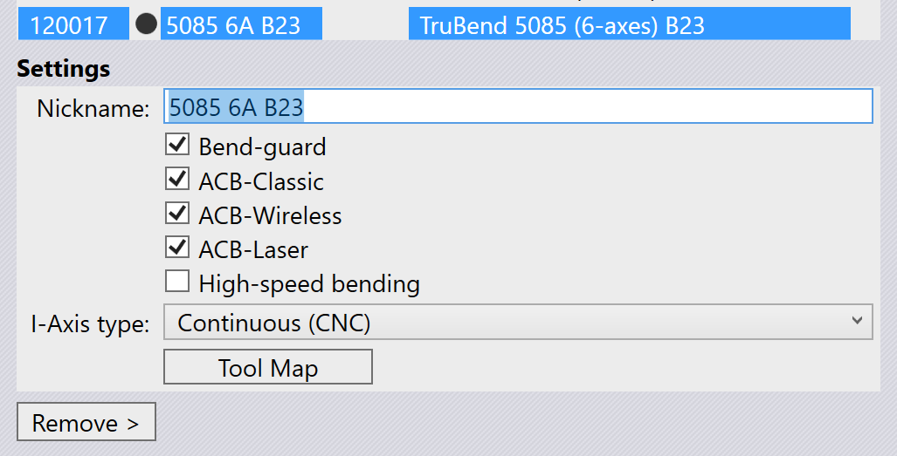
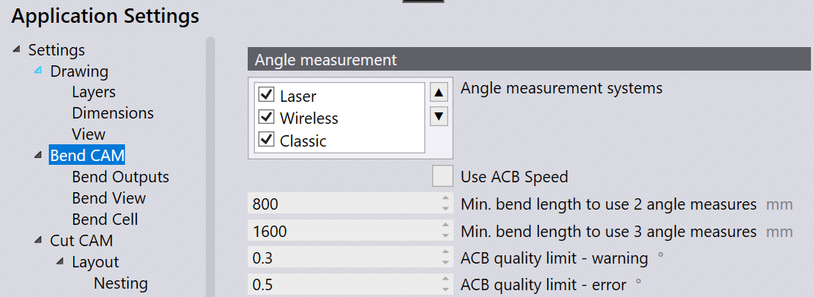
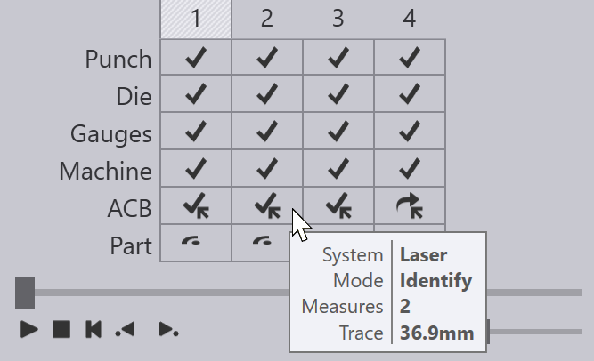
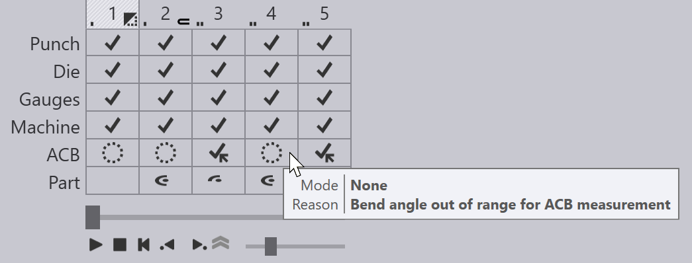

Měření úhlu
Měření úhlu systémy jako ACB™, ACBLaser™ nebo LCB™ lze použít ke zlepšení přesnosti úhlu při ohýbání. Tyto systémy měří skutečný úhel dosažený během ohýbání a zpětný pružný pohyb plechu a na základě těchto informací dynamicky upravují dolní úvrať nosníku tak, aby bylo dosaženo cílového úhlu ohybu.
Kotoučové a laserové systémy
Systémy na měření úhlů jsou založeny na dotykových kotoučích namontovaných v raznících nebo na optických systémech využívajících laserový paprsek promítaný na obrobek. TecZone Bend podporuje obojí a při konfiguraci stroje existují některé přepínače možností, které můžete zapnout v závislosti na možnostech stroje, které máte nainstalovány.

Obrázek výše zobrazuje panel nastavení pro stroj Trumpf 5085 B23. Tento stroj podporuje dva typy měření úhlu pomocí kotouče (ACB Classic a ACB Wireless) a také měření pomocí laseru (ACB Laser ). Tento konkrétní stroj je nakonfigurován se zapnutými všemi třemi možnostmi.
Pokud má ohraňovací lis oba systémy na měření úhlů, můžete dále upřednostnit jeden před druhým, nebo můžete vypnout měření úhlu pro konkrétní díl. To můžete provést pomocí panelu Nastavení.[1]

V části Měření úhlu stránky Nastavení/BendCAM je seznam možností, který umožňuje zapnout nebo vypnout různé systémy na měření úhlů. Můžete upřednostnit jeden před druhým tak, že jej vyberete a posunete nahoru nebo dolů pomocí tlačítek se šipkami nahoru/dolů vedle něj. V tomto konkrétním příkladu jsou povolena jak měření úhlu pomocí kotouče, tak pomocí laseru, přičemž upřednostňujeme laser.[2]
Možnost Použít ACB Speed určuje, zda bude strategie ACB Speed (dostupná na strojích Touchpoint) použita jako výchozí.
Metody ACB
Existují různé metody ACB, které lze použít v TecZone Bend. Většina z nich je společná pro měření úhlu pomocí kotouče i laseru, proto nejprve popíšeme různé metody.
Identifikovat
Metoda Identifikovat nebo Identifikace nebo Identifikovat zpětné pružení je kanonickým použitím systému ACB. Ohraňovací lis používá systém na měření úhlů k měření skutečného úhlu, který vzniká při ohýbání dílu. Po úplném ohnutí dílu přejde stroj do dekompresního stavu, aby kov mohl zpětně pružit. Zpětné pružení se také měří pomocí ACB a kompenzuje se přesným přehýbáním. Aby se zabránilo možnosti překmitu cílového úhlu během měření, stroj nejprve provede mírné podohýbání a poté provede následné opětovné ohýbání, aby dosáhl cíle. Jedná se o nejpřesnější, ale také nejčasově náročnější metodu ACB.
Učení Y
V metodě Učení Y se systém ACB vůbec nepoužívá. Cíl nosníku Y (dolní úvrať) se jednoduše zkopíruje z předchozího ohybu (známého jako Referenční ohyb), který již byl změřen pomocí metody Identifikovat. Tento dřívější ohyb musí být identický z hlediska úhlu, poloměru a použití nástroje.
Naučené zpětné pružení
V metodě Naučené zpětné pružení nebo Naučit zpětné pružení používá systém ACB úhel odpružení z předchozího ohybu, který byl změřen pomocí metody Identifikovat. Systém ACB se stále používá k regulaci ohybu, ale protože druhé měření po dekompresi není nutné, je cyklus rychlejší než úplný cyklus Identifikovat.
Zadání zpětného pružení
Metoda Zadání zpětného pružení, Zadat zpětné pružení, Opraveno nebo ACB Smart používá systém ACB
k měření cílového úhlu, ale používá hodnotu pružnosti, kterou zadává
uživatel. Jinými slovy, ACB jednoduše ohne díl do cílového úhlu
uživatelem zadanou korekční hodnotou. Po dekompresi se neprovádí žádné druhé měření.
Symboly pro ACB
TecZone Bend používá několik ikon ke znázornění různých metod ACB nebo chyb a varování ACB. Zde jsou ikony používané k zobrazení různých systémů a režimů ACB v navigátoru ohýbání:
Ikona |
Význam |
Kotoučový systém, metoda Identifikovat |
|
Kotoučový systém, metoda Učení Y |
|
Kotoučový systém, metoda Zadání zpětného pružení |
|
Laserový systém, metoda Identifikovat |
|
Laserový systém, metoda Učení Y |
|
Laserový systém, metoda Zadání zpětného pružení |
Zde jsou ikony používané k zobrazení varování a chyb:
Ikona |
Význam |
Délka ramene příliš malá. pro dotykový kotouč |
|
Dotykový kotouč příliš blízko okraje dílu |
|
Dotykový kotouč spadne do otvoru (riziko poškození) |
|
Neplatné Referenční ohyb (z tohoto ohybu se nelze učit) |
|
Délka laserové stopy menší než ideální (varování) |
|
K měření se používá pouze jeden laser (přední nebo zadní) |
|
Délka laserové stopy je příliš malá na měření (chyba) |
Tyto ikony spolu s dalšími informacemi o používaných systémech a metodách ACB jsou zobrazeny v řádku ACB navigátoru:

Poznámky k měření úhlu
Názvy laserových systémů
Laserový systém na měření úhlů je znám pod různými názvy, jako například ACB Laser nebo LCB. Všechny jsou naprogramovány identicky v TecZone Bend, i když se skutečný hardware a implementace stroje liší. Většina uživatelského rozhraní TecZone Bend používá pouze slovo ACB nebo ACB Laser, proto budeme tento termín používat i v této diskusi.
Chování Auto-tooleru
Auto-tooler TecZone Bend přiřazuje laserové metody ACB ke každému ohybu optimálním způsobem. Zpočátku se použije metoda Identifikovat pro první ohyb a poté je učiněn pokus použít metodu Učení Y pro následující ohyby, kde je to možné. Pokud již existuje ohyb se stejným úhlem, poloměrem, sadou nástrojů a podobnou orientací směru válcování, TecZone Bend použije metodu Učení Y namísto další identifikace.
Některé ohyby mohou být automaticky přeskočeny z následujících důvodů:
-
Úhel ohybu není v rozsahu měření senzoru (příliš ostrý / příliš tupý).
-
Nejedná se o volné ohýbání (například ohýbání ražením, Z-ohyb, falcování nebo lem)
-
Jedná se o předběžný ohyb pro další ohyb (nevyžaduje přesný úhel)

Obrázek výše ukazuje díl, kde některé ohyby nemají metodu ACB – ty jsou označeny ikonami prázdného kruhu v řádku ACB a popisek pro každou buňku uvádí důvod, proč se měření ACB neprovádí.
Získání platného měření
Při provádění měření ACB TecZone Bend na základě délky linie ohybu rozhodne, zda je nutné provést jedno, dvě nebo tři měření. Skutečné polohy měření se počítají automaticky, ale lze je také upravit pomocí panelu ACB (viz níže). Obvykle TecZone Bend pohybuje oběma úhlovými senzory ACB společně a používají se přední i zadní senzory pro ACB Laser, měření, ale toto lze také upravit.
TecZone Bend může vyhodnotit délku laserové stopy pro ACB Laser, měření. Toto je délka promítané laserové linie, která je viditelná pro kameru. Části linie mohou být blokovány matricí nebo dorazy. Některé části mohou překrývat otvory v plechu nebo tváření. Hodnocení zohledňuje všechny tyto faktory a dokáže vypočítat skutečnou délku linie, která je k dispozici pro optický systém. TecZone Bend porovná tuto dostupnou délku s minimální a ideální délkou definovanou strojem a vygeneruje příslušnou chybu nebo varování (jak je uvedeno v části TecZone Bend Symboly výše).
TecZone Bend má určitou inteligenci, aby posunul pozici měření doleva nebo doprava a vyhnul se tak otvorům, tvářením nebo jiným faktorům, které mohou omezit délku stopy. Kromě toho TecZone Bend automaticky přidá zpětný pohyb k dorazům, pokud se dostanou do cesty laserovému měření. Kromě toho se vyhodnocování délky laserové stopy provádí nepřetržitě, takže pokud posunete polohy úhlových senzorů ACB nebo nastavíte dorazy, můžete výsledky okamžitě vidět v navigátoru.